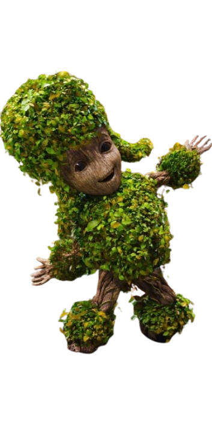

A frase “I am Groot” tem significados diferentes dependendo do tom e da situação — é quase como uma linguagem própria.
Nos bastidores, Vin Diesel gravou a frase em vários idiomas.
James Gunn (diretor dos filmes) já explicou que Groot não fala pouco — ele fala uma língua diferente.
Rocket entende Groot porque passou muito tempo com ele.
Existe uma teoria de que cada “novo Groot” não é exatamente o mesmo, mas sim um “descendente” do anterior.
